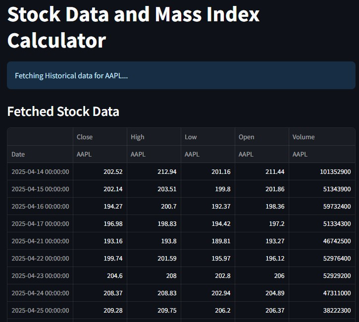
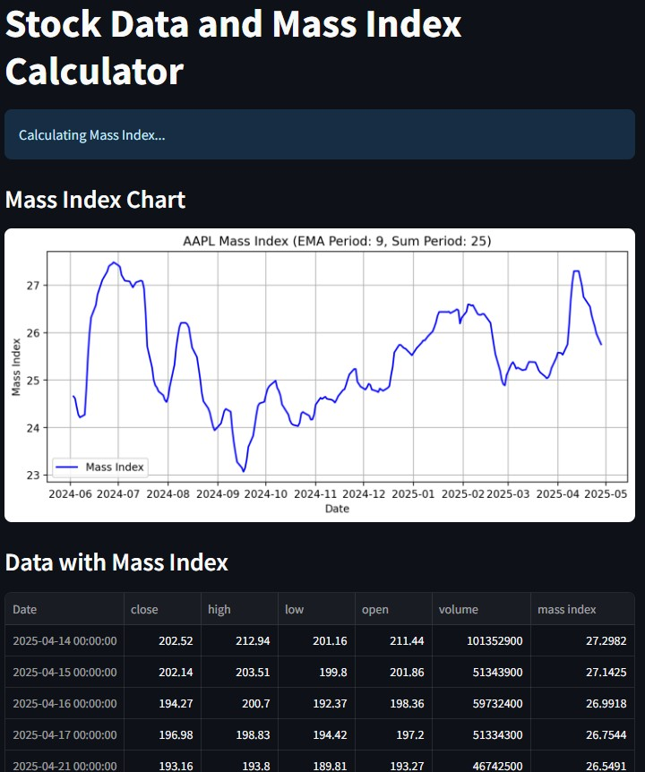
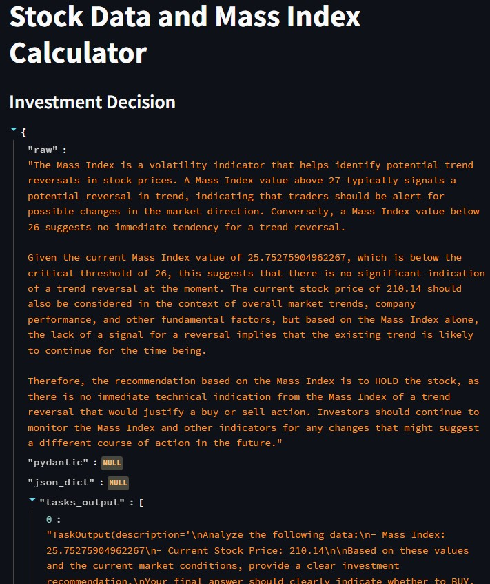
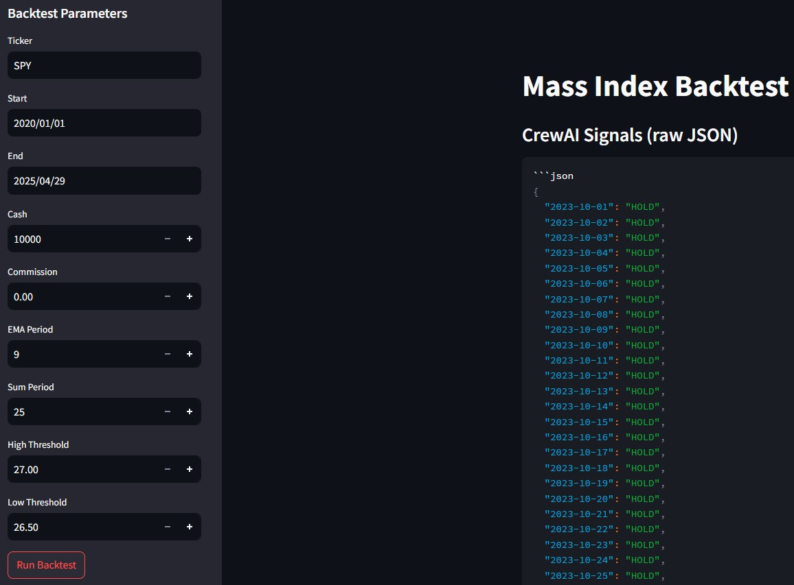
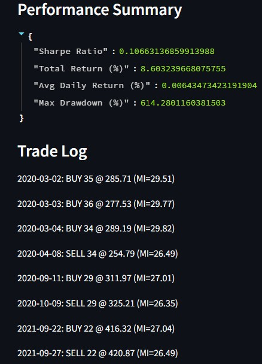
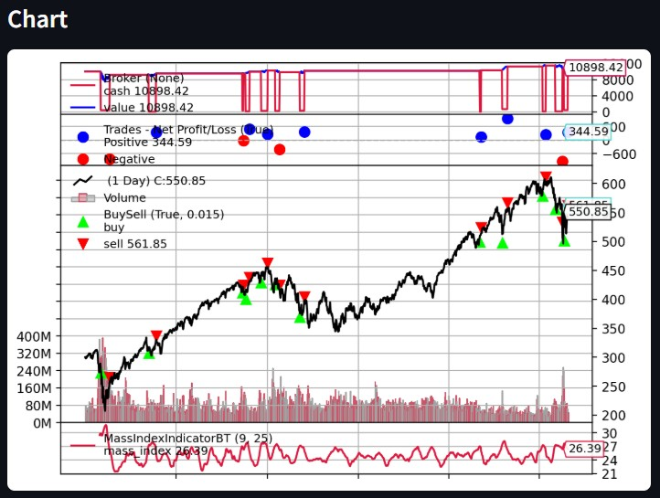

AI Agent Stock Prediction System
This project implements a Mass Index technical indicator module within our AI Agent Stock Prediction system. I developed the core Mass Index calculation, built a customizable Streamlit interface supporting both real-time and historical data, integrated CrewAI agents for automated buy/sell/hold recommendations, wrote comprehensive unit and integration tests, and designed a backtesting framework to evaluate strategy performance.
View Code on GitHub| Sprint | Primary Objective |
|---|---|
| Sprint 1 | Minimal Viable Product: core Mass Index calculation & display |
| Sprint 2 | Customization & Data Integration: UI parameter controls, real-time & historical data fetch |
| Sprint 3 | CrewAI Integration & Testing Scaffold: automated recommendations & initial test cases |
| Sprint 4 | Quality & Validation: unit/integration tests and backtesting framework |
Key User Story: As a trader, I want to use the Mass Index integrated with CrewAI agents to identify trend reversals and receive clear investment recommendations.
Below are my direct contributions to the Mass Index feature, with links to the code and supporting screenshots:






| Date | Commit | Description | User Story | Task ID |
|---|---|---|---|---|
| Feb 4, 2025 | b3b9b803536014d6f9bf97a0687510eed2b23d69 | Mass Index Indicator code | Mass Index | MassIndex.1 |
| Feb 8, 2025 | 533d312d35dc165a470d9738d23ca50a273e2491 | Customization features (Sprint 2) | Mass Index | MassIndex.3 |
| Feb 15, 2025 | d20daae71f0dbb8ee92782dae1640039b27804ce | Real-time & historic data support | Mass Index | MassIndex.3 |
| Mar 17, 2025 | afef7fd7e5c9a8ffc80b36108daa2e53b7eab511 | CrewAI recommendation integration | Mass Index | MassIndex.8 |
| Apr 1, 2025 | a41a220ea6b75a496de3ad2f21699d7aa3100126 | Testing code for Mass Index | Mass Index | MassIndex.10 |
| Apr 22, 2025 | b28b404c54ba27642fcaf9b056bc7e473f6b8c82 | Backtesting Mass Index strategy | Mass Index | MassIndex.11 |